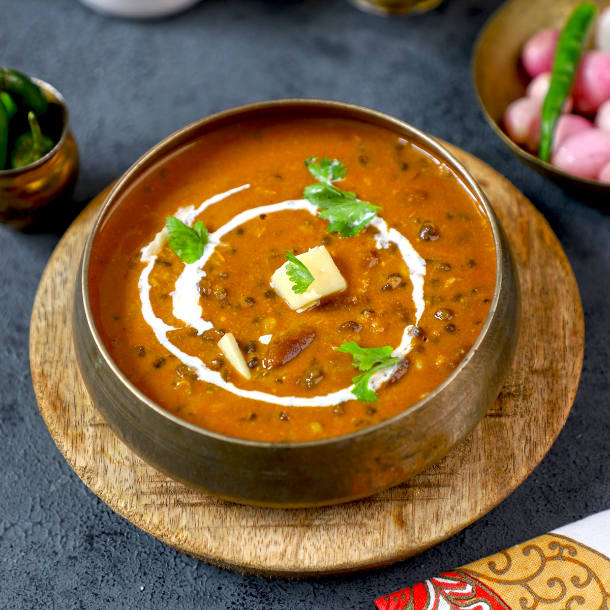

Dal Makhani Recipe

Description:
Dal Makhani is a rich, creamy, and mildly spiced North Indian lentil dish. Originating from the Punjab region, it is slow-cooked with whole black lentils (urad dal), red kidney beans (rajma), aromatics, and generous amounts of butter and cream to achieve its luxurious texture.
Key Ingredients:
- Lentils & Beans: 1 cup whole black lentils (Sabut Urad Dal) and \(\frac{1}{4}\) cup red kidney beans (Rajma).
- Aromatics: Chopped onions, ginger-garlic paste, and green chilies.
- Spices: Cumin seeds, garam masala, red chili powder, bay leaves, and a pinch of nutmeg.
- The "Makhani" (Buttery) Base: Tomato puree, heavy cream, and a significant portion of butter (preferably unsalted).
- Herb & Aroma: Kasuri Methi (dried fenugreek leaves) and fresh coriander.
Step-by-Step Instructions:
-
Soak and Cook the Lentils
- Wash the lentils and kidney beans thoroughly, then soak them in water overnight (or for at least 8 hours).
- Drain the soaking water and transfer the beans to a pressure cooker. Add fresh water (about 3-4 cups) and 1 tsp of salt.
- Cook on medium-high heat for 10-15 whistles (about 35-40 minutes) until they are completely tender and mushy.
-
Prepare the Makhani Masala
- In a large pan or kadai, heat 2–3 tablespoons of butter on medium-low heat.
- Add cumin seeds and whole spices (like cloves, cardamoms, cinnamon, and bay leaf) and fry until fragrant.
- Add finely chopped onions and sauté until golden brown, then add ginger-garlic paste and cook for another minute until the raw smell disappears.
-
Simmer and Cream
- Pour in the tomato puree and cook until you see oil/fat separating from the sides of the mixture.
- Stir in the spice powders (chili powder, nutmeg).
- Add your cooked, slightly mashed lentils and beans to the pan along with some of the cooking water to adjust the consistency.
- Simmer on low heat for 15-20 minutes, allowing the flavors to meld together.
-
Final Touches
- Crush and sprinkle Kasuri Methi over the dal, and stir in your heavy cream.
- Let it simmer for another 3-5 minutes until the sauce is thick and luxurious.
- Finish with an extra dollop of butter, garnish with fresh cilantro, and serve hot.
Back to home page